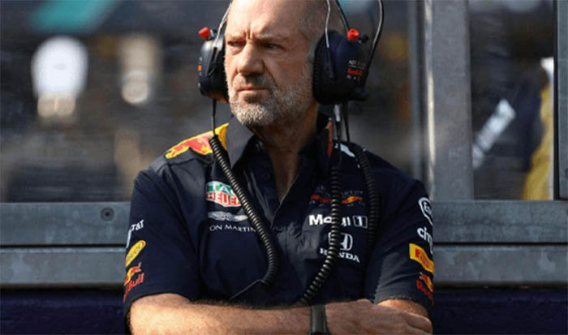

GP de Miami
05 de maio de 2024

Lando Norris ergue troféu de primeiro lugar no GP de Miami da F1 em 2024 — Foto: Jared C. Tilton -
Formula 1/Formula 1 via Getty Images
No GP de Miami de 2024, Lando Norris surpreende ao conquistar sua primeira vitória na Fórmula 1
desde 2019. Partindo do 5º lugar, ele supera Max Verstappen, que largou na pole, cruzando a linha de
chegada com uma vantagem de 7,612 segundos. Com um tempo de 1:30:49.876, Norris celebra sua vitória
e seu talento como piloto em ascensão na categoria.
REDBULL RACING
05 de maio de 2024

Adrian Newey Foto: Internet
Adrian Newey, o renomado projetista da Fórmula 1 que anunciou sua saída da Red Bull,
pode estar planejando seu futuro no esporte, segundo informações obtidas durante o GP de Miami.
Eddie Jordan, ex-proprietário de equipe, atua como empresário de Newey, e há rumores de que ele
esteja considerando várias equipes, com a Ferrari emergindo como o principal alvo. Sua possível
transferência seria um grande acontecimento no mercado da F1, dada sua reputação de transformar
equipes em campeãs. Acombinação de talento de Newey e experiência de Jordan poderia impulsionar a
Ferrari de volta aotopo do esporte, aumentando suas chances de competir pelo campeonato. Entretanto,
enquanto o futuro de Newey ainda está em aberto, as próximas semanas serão cruciais para entender se
ele decidirá assinar com a Ferrari e, caso isso aconteça, como isso poderá redefinir o cenário
competitivo da Fórmula 1.